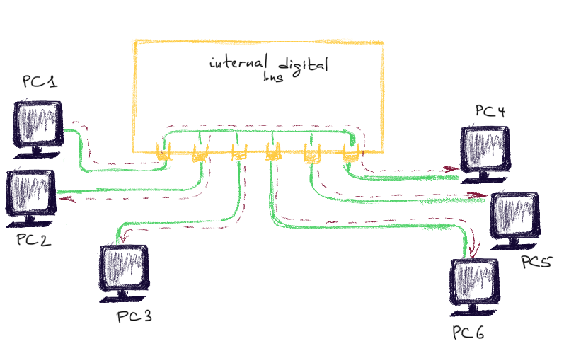
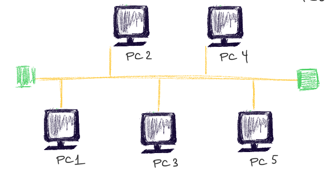

This article is about devices that reside on the physical layer of OSI model.
Coaxial Cable
Normally uses F-type connector.
Twisted Pair Cable
RJ-45 connector. Most common for LAN. Voice (blue), Auxiliary (brown, rightmost), Ethernet Receive (yellow), Ethernet Transit (green, leftmost). Max 100 meters. Cat rating system. Cat5 - 100Mb/sec for up to 100 m. Cat6/Cat6a - 1/10 Gb/sec for up to 100m.
Hubs and Repeaters
Since the max length of a cable (10BASE5 thick Ethernet) that connects two machines cannot exceed 500 m (according to the specs), there is a need to amplify and control the signal. Since machines over the wire are much farther then 500 meters, hubs and repreaters serve this particular purpose.
They both run in promiscuous mode, i.e. they don’t care who’s the sender, who’s the receiver. They simply forward the signal. They don’t even read the data they are transmitting. UTP (unshielded twisted pair cable).
Number of ports = number of PCs connected. Hubs can have an uplink port to connect to another hub. For example, the hub below has 6 ports. Therefore, it can connect 6 PCs max. Whatever PC1 sends to PC6, other PCs hear as well. It’s the job of other OSI layers to discard this frame or not. Such packets are usually discarded on the data link layer by PC’s NIC. But if you put your NIC in a promiscuous mode, it will not discard them. Hubs and repeaters are a holyday for a sniffer. Using Wireshark or other packet capture software and being on the same network, one can intercept all traffic.

COAX cable
A Cable is pretty much the same as a hub, it also makes to difference between the frames. Its only concern is to forward. Green squares are resistors (50 Ohm) that absorb the signal so that it won’t reflect back (a signal reflection problem discribed here).
One segment of such cable is max 185 meters (10BASE2 thin Ethernet) and at most 30 nodes.

References
firewall.cx